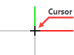
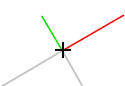
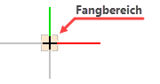
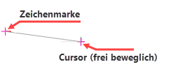

Der Cursor
Mit dem Cursor werden Funktionen aufgerufen, Zoomfunktionen ausgeführt und Elemente (Linien, Kreise, Texte usw.) ausgewählt, wenn diese im Fangbereich liegen. Innerhalb der Zeichenfläche hat der Cursor die Form und das Aussehen, wie Sie es in den Systemdaten eingestellt haben. » Systemdaten – Fangrechteck-Cursor; [Option | SysDat → Fangrechteck/Cursor]. Außerhalb der Zeichenfläche hat der Cursor die Form, die in den Einstellungen des Betriebssystems vorgenommen wurden.
 |
 |
 |
Darstellung als benutzerdefinierter Cursor mit farbigen Koordinatenachsen |
Cursor bei gedrehtem Systemwinkel |
Darstellung des Fangbereichs (nur zur Verdeutlichung) |
Die Zeichenmarke
Die Zeichenmarke stellt den Koordinatenursprung beim Zeichnen dar. Die Eingabe von X- und Y-Werten bezieht sich immer auf die Position der Zeichenmarke. Sie dient als Referenzpunkt z. B. beim Kopieren oder Verschieben.

Die Darstellungsfarbe für den Cursor und die Zeichenmarke können Sie in den Systemdaten einstellen.
Siehe auch: